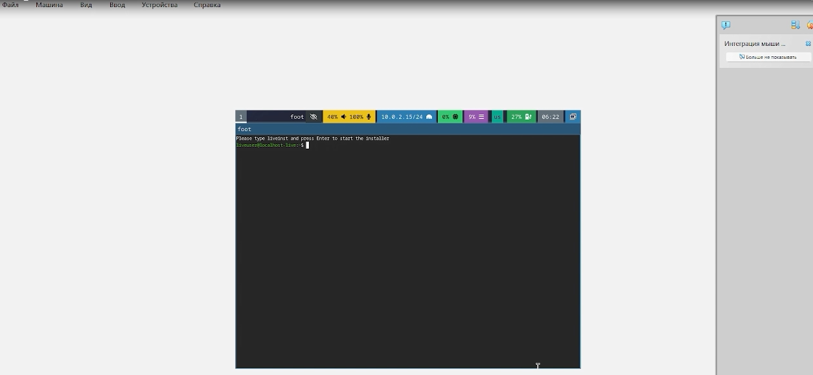
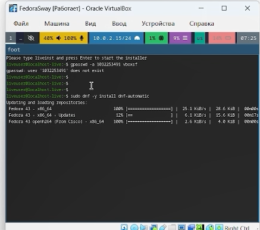
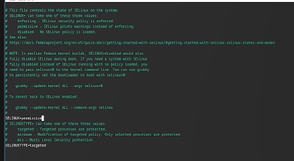
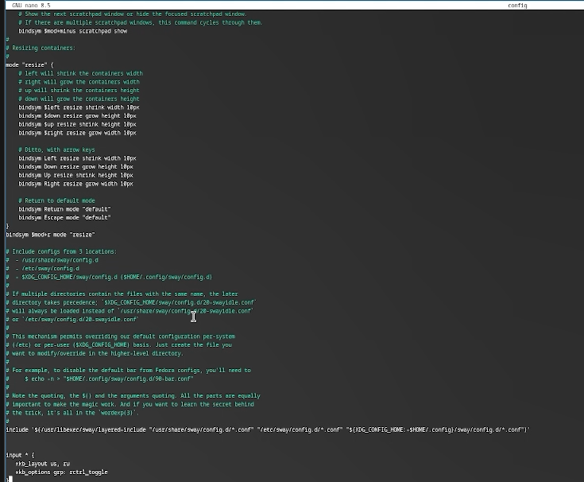
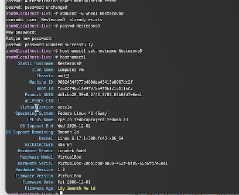
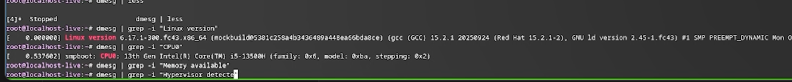

Основная цель работы заключается в получении практических навыков по установке операционной системы в среде виртуальной машины, а также по настройке базовых сервисов, необходимых для последующего функционирования системы.
Oracle VM VirtualBox — программа для виртуализации, позволяющая запускать несколько ОС на одном компьютере.
Поддерживает гостевые системы: Windows (XP–11), Linux, Solaris, OS/2, macOS (экспериментально). Работает на хостах: Windows, Linux, macOS, FreeBSD, Solaris.
Эмулирует аппаратное обеспечение для архитектур x86, AMD64 и ARM64. Базовая версия распространяется бесплатно с открытым кодом (GPL).
Создаю виртуальный жесткий диск, задаю настройки и запускаю скачанный образ операционной системы.

Скачиваю набор необходимых пакетов для работы с ОС.
Запускаю скрипт для автоматического обновления пакетов через пакетный менеджер dnf.

Отключаю защиту SELinux, так как на данном курсе мы не будем рассматривать работу с ней.

Настраиваю xkb, добавляю вторую раскладку клавиатуры с русским языком и задаю переключение на right ctrl.

Проверяю корректность заданного имени для hostname.

Проверяю последовательность загрузки графического окружения командой dmesg | grep -i с указанием вывода желаемого нахождения.

В ходе выполнения лабораторной работы мною были освоены приемы работы со средой VirtualBox: создана виртуальная машина, проведена установка необходимого программного обеспечения и выполнены базовые настройки операционной системы.